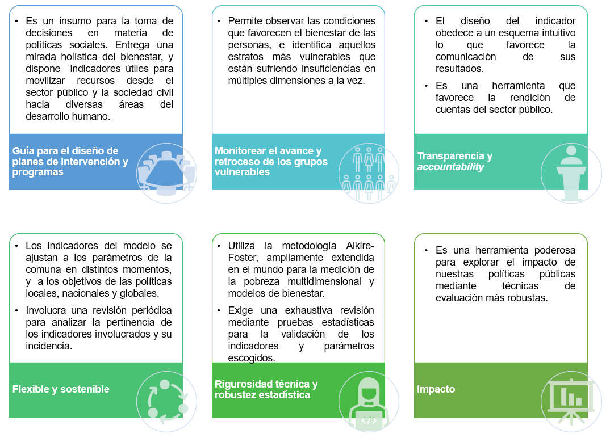
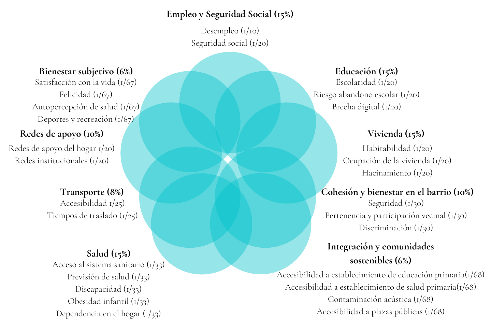

Estrategia de Desarrollo Social DECOM 2021
Presentación
La nueva estrategia de desarrollo social está impulsada por la necesidad de reconstruir mejor el bienestar de la comunidad de Las Condes, que hoy enfrenta las consecuencias profundas de la crisis sanitaria y económica provocada por la pandemia de COVID-19 que afecta al mundo, y se encuadra en un proceso de modernización en la gestión de los programas sociales de DECOM impulsado por la Dirección.
En el marco de la nueva estrategia de desarrollo social, la Dirección encarga al equipo de estudios el diseño de un modelo de brechas de bienestar capaz de generar una lectura integral de las vulnerabilidades que afectan a los vecinos y vecinas de Las Condes que se acercan a la Municipalidad. Desde allí nace la propuesta de generar un índice de bienestar multidimensional con encuesta de hogares representativa a nivel comunal, y un instrumento de focalización.
El propósito de la medida es conocer las condiciones de bienestar de los hogares de la comuna, monitorear los avances y retrocesos en los niveles de bienestar de grupos vulnerables, y guiar el diseño y la intervención de los programas sociales de la Dirección de Desarrollo Comunitario. El marco de acción del modelo está vinculado a distintos niveles de políticas y planes de desarrollo; la oferta programática de DECOM Las Condes, La Política Nacional de Desarollo Urbano: Ciudades Sustentables y Calidad de Vida del Estado de Chile, y los Objetivos del Desarrollo Sostenible (ODS) de Naciones Unidas.
Particularidades del Modelo de Bienestar Las Condes:

El concepto de bienestar que aquí se presenta, utiliza como espacio de medición las nociones de funcionamientos y capacidades, que se rescatan del enfoque de capacidades de A. Sen. El enfoque de capacidades es un marco teórico moral que propone evaluar el desarrollo humano en función de las libertades que gozan los individuos para alcanzar el tipo de vida que por diversas razones valoran. El foco del bienestar está puesto sobre las personas, sus experiencia y valoraciones respecto del tipo de vida que desean llevar, incorporando una mirada holística del desarrollo y bienestar de las sociedades.
En términos técnicos este proyecto se apoyó en el trabajo académico del Oxford Poverty & Human Development Initiative (OPHI) y las recomendaciones del Programa de Naciones Unidas para el Desarrollo (PNUD), que proponen un marco económico conceptual para observar las condiciones de vida que alcanzan las personas y que originan la pobreza y los niveles de bienestar a los que pueden acceder. Utilizando la metodología Alkire-Foster se construyó un Índice de Bienestar Multidimensional a nivel comunal.
El índice de bienestar multidimensional Las Condes, observa un total de 28 indicadores agregados en 9 dimensiones. Las dimensiones involucradas son: (1) Empleo y Seguridad Social, (2) Educación, (3) Salud, (4) Bienestar subjetivo, (5) Vivienda, (6) Transporte, (7) Cohesión y Bienestar en el Barrio, (8) Redes de Apoyo e (9) Integración y Comunidades Sostenibles. En el esquema adjunto se aprecian los 28 indicadores contenidos por dimensión.

Marco teórico
La necesidad de contar con mediciones de bienestar más complejas que la observación de las condiciones puramente económicas, como alcanzar un cierto nivel de renta o el acceder a determinados bienes y servicios, queda manifiesta en el reporte de la Comisión para la medición del Desarrollo Económico y Progreso Social de Paris, elaborado por Stiglitz, Sen y Fitoussi (2009).
Desde allí, se ha avanzado de manera sustantiva en la creación de indicadores multidimensionales de bienestar en diversos países. El Reino Unido, Alemania, Australia, Nueva Zelanda, Canadá, Holanda, Italia o Bután con su llamativo índice nacional bruto de felicidad, han seguido este camino. Si bien no hay métricas absolutas para la medición del bienestar, existe una demanda creciente por este tipo de indicadores para guiar el diseño de las políticas públicas (Alkire, 2015).
“El bienestar se evalúa en la capacidad que poseen las personas de lograr aquellos resultados que por diversos motivos consideran valiosos para sus vidas […]” – Amartya Sen.
En el OPHI se ha desarrollado una extensa cantidad de literatura empírica y propuestas metodológicas para la medición del bienestar desde el espacio de las capacidades de Sen
Por su parte, la pandemia hoy nos ofrece la oportunidad de replantear las prioridades de las políticas públicas, asi como los indicadores con los que observamos el progreso y bienestar. Hoy más que nunca las necesidades y comportamientos de los hogares han mutado (Alkire & Kovesdi, 2020).
¿Qué es el enfoque de capacidades?
El enfoque de capacidades es un marco teórico moral que propone evaluar el bienestar en función de las oportunidades reales que poseen las personas para alcanzar aquellos estados que consideran valiosos. El enfoque de capacidades vincula el desarrollo humano con la expansión de las libertades que disfrutamos los individuos para llevar el tipo de vida que por diversas razones valoramos (Sen, 2001).
Sen pone el énfasis en las capacidades que permiten a las personas alcanzar los resultados que aspiran para sus vidas (well-being), antes que en un determinado nivel de renta. A través del enfoque de capacidades se propone superar algunos de los axiomas de la economía tradicional “bienestarista” (welfare) centrados en la satisfacción de preferencias, o dicho de otro modo que entienden la ausencia de bienestar exclusivamente como la falta de recursos.
bienestar (well-being) implicancias prácticas para las políticas públicas:
Enfoque de productos (commodities)
Enfoque de capacidades (capabilities)
El recurso importa pero es solo instrumental. Lo sustancial son las capacidades que poseemos las personas de convertir esos recursos en funcionamientos deseables. No existe relación entre poseer la bicicleta y el bienestar. Lo que realmente importa es la habilidad de utilizar la bicicleta para poder movilizarse. Cuando pensamos en una personas en situación de discapacidad, esta requiere un conjunto más amplio de recursos para poder utilizar la bicicleta y alcanzar el funcionamiento de desplazarse, no le basta con tener la bicicleta.
Lo mismo aplica en el caso de una mujer emabarazada que tiene requerimientos nutricionales especiales. No podemos asumir que por tener un nivel de renta o una canasta de alimentos realmente va a poder acceder a un estado nutricional óptimo. Se requiere un set más amplio de recursos para poder alcanzar el funcionamiento nutricional acorde a su condición.
En términos prácticos cuando diseñamos las políticas públicas con atención en la satisfacción de preferencias, generamos asistencia basada únicamente en transferencia de recursos (enfoque de productos), y dejamos de prestar atención a las distintas combinaciones de funcionamientos (seres y haceres) que permiten a las personas realmente lograr aquello que aspiran para sus vidas. Desde el enfoque de productos suponemos que si tienes la bicicleta entonces alcanzaste el bienestar (no necesitas ayuda). En cambio, el enfoque de capacidades nos advierte que la planificación de políticas sociales no pasa por una definición fáctica de un set de bienes primarios que las personas necesitan, sino que se debe dotar de agencia y empoderamiento a las personas para que puedan desarrollarse libremente.
Índice de bienestar multidimensional
Es la tasa de recuento (%) de hogares que alcanzan niveles favorables de bienestar.
Es la tasa de recuento (%) de hogares con niveles insuficientes de bienestar.
Denota la intensidad de las privaciones o insuficiencias que afectan a los hogares con niveles insuficientes de bienestar (¿Cuán vulnerables son?).

Esquema de transferencias directas
Bibliografía
Alkire, S. (2005). ‘Why the capability approach?’, Journal of Human Development, vol. 6(1), pp. 115–133
Alkire, S. & Foster, J. (2011). Counting and multidimensional poverty measurement. Journal of Public Economics, 95(7–8), 476–487.
Alkire, S. & Kovesdi, F. (2020). A Birdseye View of Well-being: Exploring a Multidimensional Measure for the United Kingdom. In OPHI Oxford poverty & human development initiative. Research in Progress Series 60a. Oxford University
Alkire, S. (2015). The capability approach and well-being measurement for public policy. In OPHI Oxford poverty & human development initiative. Working paper 94. Oxford University
Comim, F., Qizilbash, M., & Alkire, S. (2008). The capability approach: Concepts, measures and applications (1et ed.). New York: Cambridge University Press
Nussbaum, M. & Sen, A. (1993). The quality of life. Clarendon Press.
Sen, A. (1985). Well-Being, Agency and Freedom: The Dewey Lectures 1984. The Journal of Philosophy, 82(4), 169–221.
Sen, A. (2001). Development as freedom (1st ed.). Oxford: Oxford Paperbacks.
Stiglitz, J. E., Sen, A., & Fitoussi, J.-P. (2009). Report by the commission on the measurement of economic performance and social progress. Citeseer.

 (2) 29507613 / (2) 29507601
(2) 29507613 / (2) 29507601
Avenida Apoquindo 9070, Las Condes  http://github.com/EstudiosDecom
http://github.com/EstudiosDecom  Felipe Vega (desarrollador)
Felipe Vega (desarrollador)